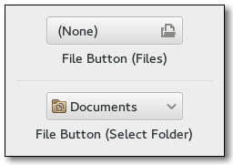

Gtk.FileChooserButton¶
Example¶

- Subclasses:
None
Methods¶
- Inherited:
Gtk.Box (14), Gtk.Container (35), Gtk.Widget (278), GObject.Object (37), Gtk.Buildable (10), Gtk.Orientable (2), Gtk.FileChooser (63)
- Structs:
Gtk.ContainerClass (5), Gtk.WidgetClass (12), GObject.ObjectClass (5)
class |
|
class |
|
|
|
|
|
|
|
|
Virtual Methods¶
|
Properties¶
- Inherited:
Gtk.Box (3), Gtk.Container (3), Gtk.Widget (39), Gtk.Orientable (1), Gtk.FileChooser (11)
Name |
Type |
Flags |
Short Description |
|---|---|---|---|
w/co |
The file chooser dialog to use. |
||
r/w |
The title of the file chooser dialog. |
||
r/w |
The desired width of the button widget, in characters. |
Child Properties¶
- Inherited:
Style Properties¶
- Inherited:
Signals¶
Name |
Short Description |
|---|---|
The |
Fields¶
Name |
Type |
Access |
Description |
|---|---|---|---|
parent |
r |
Class Details¶
- class Gtk.FileChooserButton(*args, **kwargs)¶
- Bases:
- Abstract:
No
- Structure:
The
Gtk.FileChooserButtonis a widget that lets the user select a file. It implements theGtk.FileChooserinterface. Visually, it is a file name with a button to bring up aGtk.FileChooserDialog. The user can then use that dialog to change the file associated with that button. This widget does not support setting theGtk.FileChooser:select-multipleproperty toTrue.- Create a button to let the user select a file in /etc
{ GtkWidget *button; button = gtk_file_chooser_button_new (_("Select a file"), GTK_FILE_CHOOSER_ACTION_OPEN); gtk_file_chooser_set_current_folder (GTK_FILE_CHOOSER (button), "/etc"); }
The
Gtk.FileChooserButtonsupports theGtk.FileChooserActionsGtk.FileChooserAction.OPENandGtk.FileChooserAction.SELECT_FOLDER.The
Gtk.FileChooserButtonwill ellipsize the label, and will thus request little horizontal space. To give the button more space, you should callGtk.Widget.get_preferred_size(),Gtk.FileChooserButton.set_width_chars(), or pack the button in such a way that other interface elements give space to the widget.- CSS nodes
Gtk.FileChooserButtonhas a CSS node with name “filechooserbutton”, containing a subnode for the internal button with name “button” and style class “.file”.- classmethod new(title, action)[source]¶
- Parameters:
title (
str) – the title of the browse dialog.action (
Gtk.FileChooserAction) – the open mode for the widget.
- Returns:
a new button widget.
- Return type:
Creates a new file-selecting button widget.
New in version 2.6.
- classmethod new_with_dialog(dialog)[source]¶
- Parameters:
dialog (
Gtk.Dialog) – the widget to use as dialog- Returns:
a new button widget.
- Return type:
Creates a
Gtk.FileChooserButtonwidget which uses dialog as its file-picking window.Note that dialog must be a
Gtk.Dialog(or subclass) which implements theGtk.FileChooserinterface and must not haveGtk.DialogFlags.DESTROY_WITH_PARENTset.Also note that the dialog needs to have its confirmative button added with response
Gtk.ResponseType.ACCEPTorGtk.ResponseType.OKin order for the button to take over the file selected in the dialog.New in version 2.6.
- get_focus_on_click()[source]¶
-
Returns whether the button grabs focus when it is clicked with the mouse. See
Gtk.FileChooserButton.set_focus_on_click().New in version 2.10.
Deprecated since version 3.20: Use
Gtk.Widget.get_focus_on_click() instead
- get_title()[source]¶
- Returns:
a pointer to the browse dialog’s title.
- Return type:
Retrieves the title of the browse dialog used by self. The returned value should not be modified or freed.
New in version 2.6.
- get_width_chars()[source]¶
- Returns:
an integer width (in characters) that the button will use to size itself.
- Return type:
Retrieves the width in characters of the self widget’s entry and/or label.
New in version 2.6.
- set_focus_on_click(focus_on_click)[source]¶
- Parameters:
focus_on_click (
bool) – whether the button grabs focus when clicked with the mouse
Sets whether the button will grab focus when it is clicked with the mouse. Making mouse clicks not grab focus is useful in places like toolbars where you don’t want the keyboard focus removed from the main area of the application.
New in version 2.10.
Deprecated since version 3.20: Use
Gtk.Widget.set_focus_on_click() instead
- set_title(title)[source]¶
- Parameters:
title (
str) – the new browse dialog title.
Modifies the title of the browse dialog used by self.
New in version 2.6.
- set_width_chars(n_chars)[source]¶
- Parameters:
n_chars (
int) – the new width, in characters.
Sets the width (in characters) that self will use to n_chars.
New in version 2.6.
- do_file_set() virtual¶
Signal emitted when the user selects a file.
Signal Details¶
- Gtk.FileChooserButton.signals.file_set(file_chooser_button)¶
- Signal Name:
file-set- Flags:
- Parameters:
file_chooser_button (
Gtk.FileChooserButton) – The object which received the signal
The
::file-setsignal is emitted when the user selects a file.Note that this signal is only emitted when the user changes the file.
New in version 2.12.
Property Details¶
- Gtk.FileChooserButton.props.dialog¶
- Name:
dialog- Type:
- Default Value:
- Flags:
Instance of the
Gtk.FileChooserDialogassociated with the button.New in version 2.6.
- Gtk.FileChooserButton.props.title¶
-
Title to put on the
Gtk.FileChooserDialogassociated with the button.New in version 2.6.